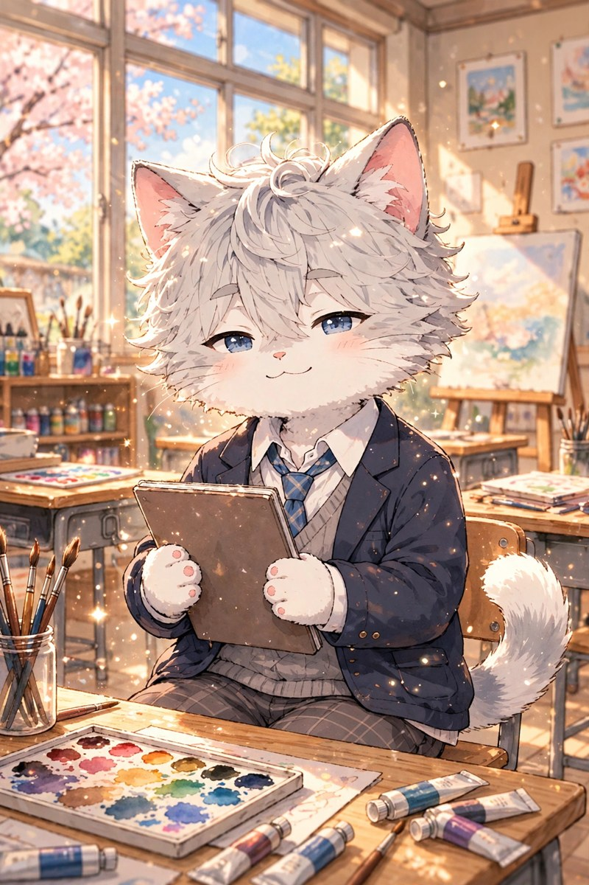

🐾 そうたの部屋 🐾
MOMO'S FRIENDS

🎨 そうた
そうたです。美術部に所属しています。ももとは部活の先輩・後輩です。
絵を描いている時間が、いちばん落ち着きます。
薄いグレーの毛と、青い目が目印です。
夕焼けの色が好きで、ついスケッチブックを開いてしまいます。
誰かの「好き」を、そっと応援できる人でいたいです。
📸 そうたの3つの顔
写真をタップすると大きく見られるよ♡
MOMO'S FRIENDS

そうたです。美術部に所属しています。ももとは部活の先輩・後輩です。
絵を描いている時間が、いちばん落ち着きます。
薄いグレーの毛と、青い目が目印です。
夕焼けの色が好きで、ついスケッチブックを開いてしまいます。
誰かの「好き」を、そっと応援できる人でいたいです。
写真をタップすると大きく見られるよ♡